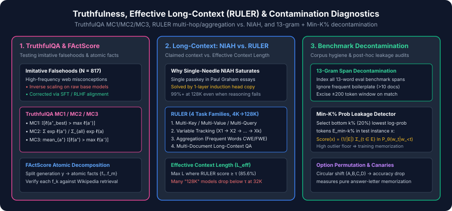

Long-Context, Hallucination & Contamination Diagnostics: TruthfulQA, RULER, HaluEval & N-Gram Decontamination
A frontier model can score above $85\%$ on MMLU and $90\%$ on GSM8K while still failing in production for three structural reasons: (1) it confidently repeats popular human misconceptions or fabricates citations (hallucination), (2) its attention mechanism degrades long before its advertised $128\text{K}$ context window when tasks require more than simple passkey copying (long-context degradation), or (3) its benchmark scores are inflated by leaked test questions in its pretraining or SFT mixtures (benchmark contamination).
In this concluding chapter of the series, we examine the diagnostic benchmarks and mathematical algorithms built to audit truthfulness (TruthfulQA, HaluEval, FActScore), effective long-context reasoning (NIAH, RULER, BABILong), and data hygiene (13-gram span decontamination and Min-K% Prob).

1. TruthfulQA & Imitative Falsehoods (Lin et al., 2022)
Most factual errors made by base language models are not random noise; they are imitative falsehoods induced by the cross-entropy pretraining objective itself. When a misconception appears thousands of times on the web (e.g., " humans only use 10% of their brains", "cracking your knuckles causes arthritis", or "bulls are enraged by the color red"), minimizing $\mathcal{L}_{\text{CE}}$ directly incentivizes the model to assign higher probability to the popular myth than to the scientific truth.
TruthfulQA ($N = 817$ questions across $38$ categories including Health, Law, Conspiracies, Fiction, and Cognitive Biases) was adversarially constructed against GPT-3 so that the highest-likelihood web continuation is false. Remarkably, Lin et al. (2022) showed that raw pretrained model families exhibit inverse scaling on TruthfulQA: larger base models memorize human misconceptions better than smaller models, and only explicit post-training (SFT / RLHF / DPO) reverses the trend.
The Three Multiple-Choice TruthfulQA Metrics: MC1, MC2 & MC3
Each TruthfulQA question $x$ is accompanied by a set of verified true reference answers $\mathcal{A}^+ = \{a_1^+, \dots, a_m^+\}$ (including a designated single best true answer $a_{\text{best}}^+ \in \mathcal{A}^+$) and a set of common false answers $\mathcal{A}^- = \{a_1^-, \dots, a_k^-\}$. Let $\ell(a) = \ln P_\theta(a \mid x)$ denote the conditional log-likelihood of answer $a$. Standard evaluation harnesses (`truthfulqa_mc2` in `lm-evaluation-harness`) compute three distinct quantities:
-
MC1 (Single-True Accuracy): Evaluates $a_{\text{best}}^+$ against all false options $\mathcal{A}^-$:
$$\operatorname{MC1}(x) = \mathbb{I}\!\left[\ell(a_{\text{best}}^+) > \max_{a^- \in \mathcal{A}^-} \ell(a^-)\right]$$
-
MC2 (Normalized Multi-True Probability Mass — Open LLM Leaderboard v1 Standard): Computes the total normalized probability mass assigned to the entire set of true answers $\mathcal{A}^+$ relative to $\mathcal{A}^+ \cup \mathcal{A}^-$:
$$\operatorname{MC2}(x) = \frac{\sum_{a^+ \in \mathcal{A}^+} \exp(\ell(a^+))}{\sum_{a^+ \in \mathcal{A}^+} \exp(\ell(a^+)) + \sum_{a^- \in \mathcal{A}^-} \exp(\ell(a^-))}$$
-
MC3 (Fraction of True Options Outscoring All False Options): Measures what proportion of individual true statements beat the most tempting misconception:
$$\operatorname{MC3}(x) = \frac{1}{|\mathcal{A}^+|}\sum_{a^+ \in \mathcal{A}^+} \mathbb{I}\!\left[\ell(a^+) > \max_{a^- \in \mathcal{A}^-} \ell(a^-)\right]$$
2. Hallucination Detection & Atomic Fact Verification: HaluEval & FActScore
While TruthfulQA tests short misconceptions, real-world RAG and assistant workloads generate multi-paragraph responses where true and fabricated statements are interleaved within the same sentence. Two complementary benchmarks target this regime:
- HaluEval (Li et al., 2023): $35{,}000$ samples ($30{,}000$ task-specific QA/dialogue/summarization + $5{,}000$ general user queries) pairing ground-truth responses with plausible hallucinations generated via ChatGPT using two sampling strategies (one-pass instruction vs. multi-step conversational perturbation), evaluating whether a model or judge can classify unverifiable claims.
-
FActScore (Fine-Grained Atomic Evaluation of Factual Precision, Min et al., 2023): Instead of grading a biography or technical summary $y$ as a binary whole, FActScore decomposes $y$ into a list of atomic facts $\mathcal{F}(y) = \{f_1, \dots, f_M\}$ (short sentences each conveying exactly one piece of information) and retrieves passages from a trusted knowledge corpus $\mathcal{C}$ (Wikipedia) to verify each atomic fact independently:
$$\operatorname{FActScore}(y) = \frac{1}{|\mathcal{F}(y)|}\sum_{f \in \mathcal{F}(y)} \mathbb{I}\!\left[f \text{ is entailed by retrieved } \mathcal{C}(f)\right]$$
3. Long-Context Evaluation: Why NIAH Saturates & How RULER Measures $L_{\text{eff}}$
When context windows expanded from $4\text{K}$ to $128\text{K}\text{--}1\text{M}$ tokens via RoPE scaling (NTK-aware, YaRN), Needle-In-A-Haystack (NIAH, Kamradt, 2023) became the standard visualization: a single synthetic passkey statement (e.g., "The best thing to do in San Francisco is eat a sandwich and sit in Dolores Park on a sunny day") is inserted at varying document depths $d \in [0\%, 100\%]$ inside a haystack of Paul Graham essays of total length $L \in [4\text{K}, 128\text{K}]$.
RULER: What Is the True Effective Context Length? (Hsieh et al., 2024)
RULER generalizes NIAH into $13$ controllable synthetic and real-text tasks across $4$ cognitive categories evaluated at $L \in \{4\text{K}, 8\text{K}, 16\text{K}, 32\text{K}, 64\text{K}, 128\text{K}\}$:
- Complex Retrieval (Multi-Key, Multi-Value, Multi-Query NIAH): Inserts multiple needles with distracting keys so the model must resolve exact key-value bindings rather than copying any anomalous sentence.
- Multi-Hop Variable Tracking (VT): Embeds chains of variable assignments (
VAR_1 = 83921 ... VAR_2 = VAR_1 ... VAR_5 = VAR_4) separated by thousands of distractor tokens, asking the model to list all variables bound to83921. - Global Aggregation (Common / Frequent Words Extraction, CWE / FWE): Samples words from a Zipfian distribution across the entire context window and asks for the top-$K$ most frequent words. Because every token in the window contributes to the global count, models suffering from the "Lost in the Middle" U-shaped attention bias (Liu et al., 2024) fail sharply above $16\text{K}\text{--}32\text{K}$.
- Long-Context QA: Embeds SQuAD / HotpotQA multi-hop passages inside dozens of distracting Wikipedia articles.
Given a baseline competence threshold $\tau$ (defined in RULER as Llama-2-7B's $4\text{K}$ macro-average, $\tau = 85.6\%$), a model's Effective Context Length ($L_{\text{eff}}$) is:
Hsieh et al. (2024) demonstrated that half of open-weight models claiming a $32\text{K}+$ context window had $L_{\text{eff}} \le 16\text{K}$ on RULER.
4. Benchmark Contamination & Decontamination Algorithms
Because web crawls (Common Crawl) and open SFT mixtures scrape GitHub repositories, HuggingFace datasets, Reddit threads, and arXiv papers, public evaluation benchmarks frequently leak into training corpora. Maintaining benchmark validity requires both prospective corpus decontamination (before training) and retrospective contamination auditing (after training).
Prospective 13-Gram Span Decontamination (GPT-3 / Llama 3 Protocol)
Given a collection of evaluation benchmarks $\mathcal{B} = \{b_1, \dots, b_M\}$, the standard pretraining decontamination pipeline operates as follows:
- Normalize text (lowercase, strip punctuation, collapse whitespace) and extract all contiguous $n$-word spans ($n = 13$ words in GPT-3 and Llama, or $10$-gram tokens) from every evaluation example $x \in \mathcal{B}$ to form the index $\mathcal{G}_{13}(\mathcal{B})$.
- Boilerplate Collision Filter: Remove from $\mathcal{G}_{13}(\mathcal{B})$ any $13$-gram that occurs in more than $C_{\max}$ (typically $10$) distinct training documents (e.g., generic instructions like "choose the best answer from the following four options below").
- Window Excision: Scan each training document $d$. Whenever a surviving benchmark $13$-gram is matched at token offset $t$, excise the surrounding window $[t - 200, t + 200]$ and split the document (or discard the fragment if $<200$ tokens remain).
Retrospective Post-Hoc Detection: Min-K% Prob & Option Permutation
When auditing an already-trained model $\theta$ without access to its training data, two statistical tests detect memorization:
-
Min-K% Prob (Shi et al., 2024): For a candidate text $x = (w_1, \dots, w_T)$, compute the token log-probabilities $\ell_t = \ln P_\theta(w_t \mid w_{$$\operatorname{Min-K\%}(x; \theta) = \frac{1}{|E_{\min\text{-}k\%}(x)|}\sum_{t \in E_{\min\text{-}k\%}(x)} \ln P_\theta(w_t \mid w_{
- Circular Option Permutation Test: Evaluate a multiple-choice benchmark under all $4$ cyclic shifts of options $(\text{A}, \text{B}, \text{C}, \text{D})$. A model that genuinely reasons over option semantics maintains stable accuracy across permutations, whereas a model contaminated on raw `(Question) -> (B)` strings suffers a sharp accuracy collapse when the gold answer moves from `B` to `D`.
Diagnostic Suite / Method Target Failure Mode Granularity / Scale Core Mathematical Metric TruthfulQA Imitative web falsehoods $817$ questions ($38$ domains) MC1, MC2 (normalized true mass), MC3 FActScore / HaluEval Long-form factual hallucination Atomic facts / $35\text{K}$ pairs $\%$ Entailed atomic facts against $\mathcal{C}$ NIAH (Single Needle) Sparse induction-head retrieval Depth $\times$ Length ($4\text{K}\text{--}128\text{K}$) Passkey recall heatmap ($\%$) RULER / BABILong Multi-hop & global context decay $13$ tasks across $4\text{K}\text{--}128\text{K}$ Effective Context Length $L_{\text{eff}}(\tau)$ 13-Gram + Min-K% Prob Benchmark train-test leakage Pretraining & post-hoc audit Span overlap rate & AUROC of $\operatorname{Min-20\%}$ 5. Reference Implementation: TruthfulQA MC1/2/3, RULER $L_{\text{eff}}$ & Decontamination
The runnable Python implementation below computes TruthfulQA's exact MC1, MC2, and MC3 scores from log-likelihoods, determines a model's Effective Context Length $L_{\text{eff}}$ on RULER vs. NIAH, and executes both 13-gram corpus decontamination (with boilerplate collision filtering) and `Min-K% Prob` memorization scoring.
import math import re def score_truthfulqa_mc( true_logprobs: list[float], false_logprobs: list[float] ) -> dict[str, float]: """ Compute TruthfulQA MC1, MC2, and MC3 given conditional log-probabilities true_logprobs (with true_logprobs[0] = best true reference) and false_logprobs. """ max_false = max(false_logprobs) mc1 = float(true_logprobs[0] > max_false) # Numerically stable exp normalization for MC2 all_lps = true_logprobs + false_logprobs m = max(all_lps) true_mass = sum(math.exp(lp - m) for lp in true_logprobs) false_mass = sum(math.exp(lp - m) for lp in false_logprobs) mc2 = true_mass / (true_mass + false_mass) mc3 = sum(1.0 for lp in true_logprobs if lp > max_false) / len(true_logprobs) return {"MC1": mc1, "MC2": mc2, "MC3": mc3} def compute_effective_context_length( lengths: list[int], niah_scores: list[float], ruler_scores: list[float], threshold: float = 85.6, ) -> tuple[int, int]: """Return max context length where NIAH and RULER remain >= threshold.""" niah_eff = max((L for L, s in zip(lengths, niah_scores) if s >= threshold), default=0) ruler_eff = max((L for L, s in zip(lengths, ruler_scores) if s >= threshold), default=0) return niah_eff, ruler_eff def extract_ngrams(text: str, n: int = 5) -> set[tuple[str, ...]]: words = re.findall(r"[a-z0-9]+", text.lower()) return {tuple(words[i : i + n]) for i in range(max(0, len(words) - n + 1))} def decontaminate_corpus( train_docs: list[str], eval_items: list[str], n: int = 5, max_doc_collision: int = 2, ) -> list[str]: """ Filter training documents that share an n-gram with eval_items, ignoring generic boilerplate n-grams that appear in > max_doc_collision train docs. """ eval_ngrams: set[tuple[str, ...]] = set() for item in eval_items: eval_ngrams |= extract_ngrams(item, n=n) # Count how many training documents each eval n-gram appears in doc_ngram_sets = [extract_ngrams(doc, n=n) for doc in train_docs] collision_counts: dict[tuple[str, ...], int] = {} for d_set in doc_ngram_sets: for ng in d_set & eval_ngrams: collision_counts[ng] = collision_counts.get(ng, 0) + 1 active_eval_ngrams = { ng for ng in eval_ngrams if collision_counts.get(ng, 0) <= max_doc_collision } return [ doc for doc, d_set in zip(train_docs, doc_ngram_sets) if not (d_set & active_eval_ngrams) ] def min_k_percent_prob(token_logprobs: list[float], k_pct: float = 0.20) -> float: """Compute Shi et al. (2024) Min-K% Prob contamination score.""" k = max(1, int(math.ceil(len(token_logprobs) * k_pct))) bottom_k = sorted(token_logprobs)[:k] return sum(bottom_k) / k if __name__ == "__main__": # 1. Verify TruthfulQA MC1, MC2, MC3 when best true beats all false, but 2nd true does not tqa = score_truthfulqa_mc(true_logprobs=[-1.2, -2.5], false_logprobs=[-1.8, -3.0]) print(f"TruthfulQA -> MC1: {tqa['MC1']:.2f}, MC2: {tqa['MC2']:.4f}, MC3: {tqa['MC3']:.2f}") assert tqa["MC1"] == 1.0 and tqa["MC3"] == 0.5 and 0.60 < tqa["MC2"] < 0.70 # 2. Compare claimed NIAH 128K vs RULER Effective Context Length (L_eff) ctx_lengths = [4096, 8192, 16384, 32768, 65536, 131072] niah_curve = [99.5, 99.2, 99.0, 98.8, 98.4, 97.9] ruler_curve = [91.4, 89.1, 86.2, 79.4, 68.0, 52.1] l_niah, l_ruler = compute_effective_context_length(ctx_lengths, niah_curve, ruler_curve) print(f"Effective Context Length -> NIAH: {l_niah} tokens vs RULER: {l_ruler} tokens") assert l_niah == 131072 and l_ruler == 16384 # 3. Verify n-gram decontamination with boilerplate exemption & Min-K% Prob eval_set = [ "choose the best answer from options what is the boiling point of nitrogen at sea level" ] train_corpus = [ "choose the best answer from options in this practice quiz for students", "choose the best answer from options on each multiple choice worksheet", "choose the best answer from options when taking the standard exam", "study notes: what is the boiling point of nitrogen at sea level in kelvin", "unrelated document discussing transformer attention sinks and rope scaling", ] clean_docs = decontaminate_corpus(train_corpus, eval_set, n=5, max_doc_collision=2) print(f"Retained {len(clean_docs)}/{len(train_corpus)} clean docs after decontamination.") # The 3 docs with only the boilerplate prefix survive; doc #4 with the leaked question is removed! assert len(clean_docs) == 4 # Min-K% score is much higher (closer to 0) on memorized sequence than unseen sequence unseen_score = min_k_percent_prob([-0.2, -0.4, -5.8, -0.3, -6.2, -0.1, -0.5, -4.9, -0.2, -0.3]) memorized_score = min_k_percent_prob([-0.1, -0.2, -0.6, -0.1, -0.5, -0.1, -0.2, -0.4, -0.1, -0.2]) assert memorized_score > unseen_score + 4.0